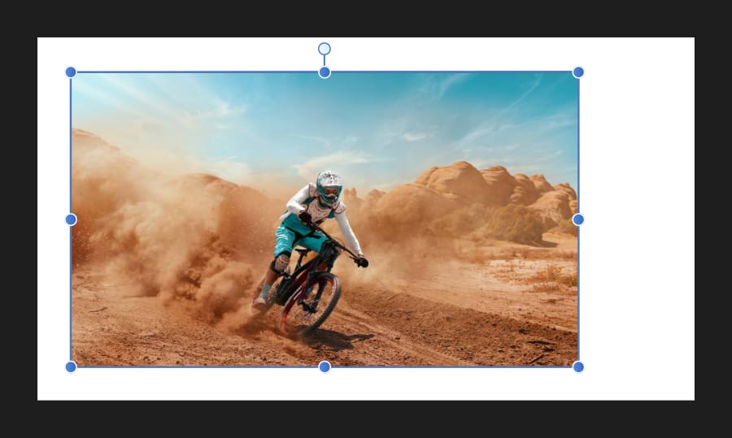

Placed images will automatically be added to the Layers panel as an image layer. This includes files that are dragged and dropped onto the document, placed via File>Place, or by any other placement method.

Image layers retain all of the data from the original image, which remains intact when the document is exported.
An image layer has a container which retains the placed image's original color space, resolution and physical dimensions (when placed at native resolution).
Image layers can be recolored much like an opened image or a pixel layer. If an image layer is drawn on, the layer will be rasterized and will adopt pixel layer properties. Rasterization is required to convert the image to the document's color space.
Do one of the following: